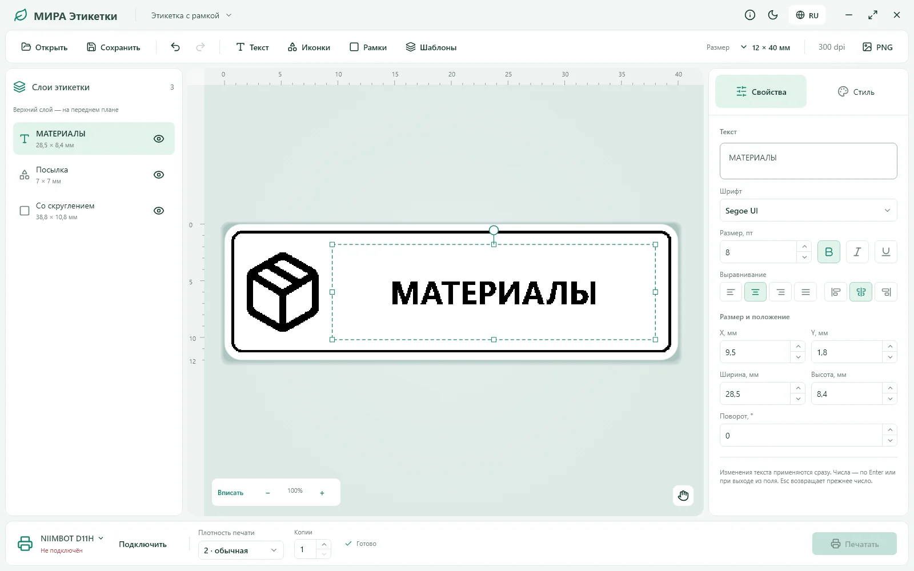

Не только текст
QR, штрихкоды Code 128, иконки и рамки — всё для вашей этикетки.
Для дома, мастерской и всего, что хочется разложить по местам. Создавайте этикетки с текстом, кодами и любимыми иконками.

QR, штрихкоды Code 128, иконки и рамки — всё для вашей этикетки.
Слои, привязки, поворот и точные размеры. Ваш макет — под вашим контролем.
Начните с шаблона, сохраните свой макет или экспортируйте его в PNG.
Выберите привычную установку или версию, которую достаточно распаковать и запустить.
Профиль печати — NIIMBOT D11H через Bluetooth BLE. Работу текущей сборки нужно проверить с вашим принтером. Редактор работает локально.